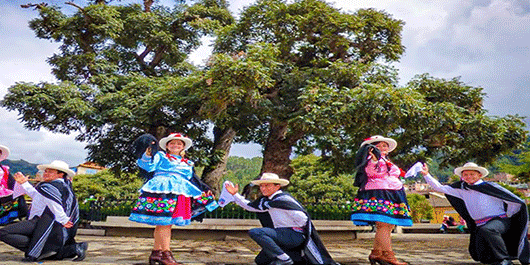

|
 |
 |
 |

|
|
|  |
|
Nuestro país es rico no solo por sus atractivos turísticos y una envidiable gastronomía, sino
también en expresiones artísticas. Una de ellas es la danza folclórica, la cual representa la
manifestación
cultural de un pueblo.
lo en la provincia ancashina de Pomabamba se cultivan 36 danzas folclóricas, hecho que le
ha valido el título honorífico de Capital Folclórica de la región Áncash, mediante la
Resolución Regional N°07 que se emitió en el año 2009.
:1.INCA 2.TINYA PALLA O WEQRUPALLA 3.EL AUKINDANZA 4.LOS CAMPEADORES O CAMPICHIS 5.SHASHU O YUNCA 6.NEGRITOS 7.PALLA O WUAYTA PALLA 8.PISPI CONDOR 9.SARAO 10.SARGENTO 11.ALTO VARA 12.HUARIDANZA 13.EL CHIMAYCHI 14.ANTI CHUNCHUY 15.HUANCA 16.ANACA 17.MARCHA 18.HUANQUILLA 19.PIZARRO |
NOMBRES Y APELLIDOS: JORDAN ESLAVA GONZALEZ |
CORREO: GONZALEZGONZALEJORDAN2001@GMAIL.COM |